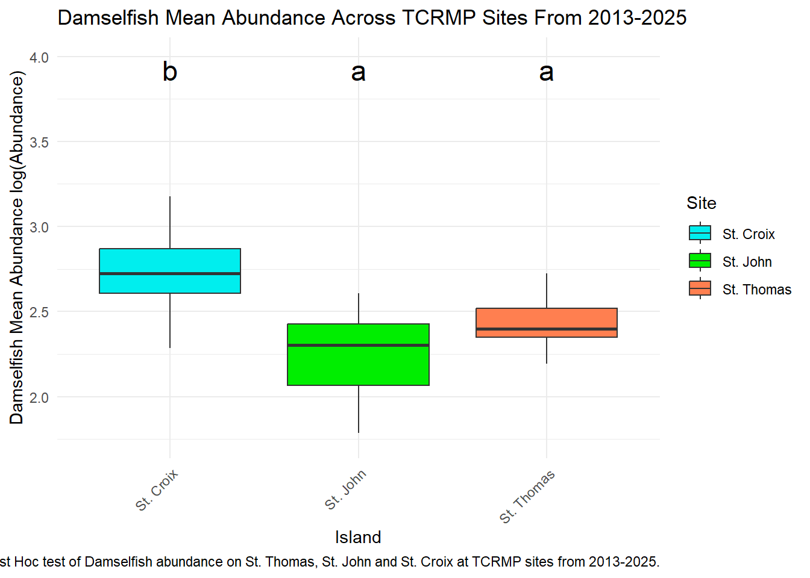

Reveal the code
####Libraries########
library(tidyverse)
library(readxl)
library(ggplot2)
library(car)
library(emmeans)
library(multcomp)
library(MASS)
#GOAL: average damselfish abundance for every TCRMP site from 2013-2025
TCRMP_SITE <- read.csv("TCRMP_datasets/TCRMP_Site_Metadata.xls - SiteMetadata.csv") # loading TCRMP SITE data
TCRMP_FISH_RAW <- read.csv("TCRMP_datasets/TCRMP_FISH/APR2026/TCRMP_Master_Fish_Census_Apr2026_Abundance.csv") # TCRMP FISH data
TCRMP_FISH <- subset(TCRMP_FISH_RAW, select = -c(SampleDate, SampleMonth , Period, CommonName, Observer, TrophicGroup, X0.5, X6.10, X11.20, X21.30, X31.40, X41.50, X51.60, X61.70, X71.80, X81.90, X91.100, X101.110, X111.120, X121.130, X131.140, X141.150, X.150)) %>% #removing excess columns
dplyr::filter(!dplyr::between(as.numeric (SampleYear), 2003, 2012)) #filter data to 2013-2025
CLEAN_TCRMP_FISH <- left_join(TCRMP_FISH, TCRMP_SITE[, c("Location", "Depth", "Island" )], by = "Location") #attaching island names and depth to dataset
TABUND_DAMSEL <- dplyr::filter(CLEAN_TCRMP_FISH,
ScientificName %in% c(
"Microspathodon chrysurus",
"Stegastes partitus",
"Stegastes variabilis",
"Stegastes adustus",
"Stegastes leucostictus",
"Stegastes planifrons"
)) # filter fish species to damselfish only
##########################################################################################################################################################
##################### DAMSELFISH DENSITY #############################
TTRANS_MEAN_ABUND_DAMSEL <- TABUND_DAMSEL %>% # mean of damselfish abundance along each transect by year and location
group_by(Location, Transect, SampleYear) %>%
summarise(
Sum_Abundance= sum(SppTotal),
Mean_Abundance = mean(SppTotal) ,
.groups = "drop") %>%
unique()
TABUNDANCE_DAMSELFISH <- TTRANS_MEAN_ABUND_DAMSEL %>% # Mean of damselfish abundance along each site per year and location
group_by(Location, SampleYear) %>%
summarise(
Location_Abundance_mean = (sum(Mean_Abundance))/10 #10 is the transect per site
)
TMAP_ABUNDANCE_DAMSELFISH <- TABUNDANCE_DAMSELFISH %>% # Mean of damselfish Abundance along each site
group_by(Location) %>%
summarise(
Location_Abundance_mean = (mean(Location_Abundance_mean))
)
##################### St. Thomas ############################
STT_ADAMS <- dplyr::filter(TABUND_DAMSEL, #Only including St. Thomas sites
Island %in% c(
"STT"
))
STT_TAMD <- STT_ADAMS %>% # mean of damselfish abundance along each transect by year and location
group_by(Location, Transect, SampleYear) %>%
summarise(
Mean_Abundance = mean(SppTotal) ,
.groups = "drop") %>%
unique()
TSTT_ABUNDANCE_DAMSELFISH <- STT_TAMD %>% # Mean of damselfish abundance along each site per year and location
group_by(Location, SampleYear) %>%
summarise(
Location_Abundance_Mean = (sum(Mean_Abundance))/10 #10 is the transect per site
)
TSTT_ABUNDANCE_LPLOT <- ggplot(TSTT_ABUNDANCE_DAMSELFISH, aes(x = SampleYear , y = Location_Abundance_Mean, group= Location, color = Location)) +
geom_line() +
scale_x_continuous(breaks = seq(min(TSTT_ABUNDANCE_DAMSELFISH$SampleYear), max(TSTT_ABUNDANCE_DAMSELFISH$SampleYear), by = 1)) +
labs(title = "Damselfish Abundance at St. Thomas TCRMP Sites From 2013-2025") +
labs(x = "Year", y= "Damselfish Mean Abundance") +
labs(caption = "Figure No. 3. Average Damselfish Abundance of TCRMP Sites on St. Thomas, USVI from 2013-2025") +
theme_minimal() +
theme(plot.caption = element_text(hjust = 0.5)) +
theme(legend.position = "right") +
theme(axis.text.x = element_text(angle = 45, hjust = 1))
################# St. Croix #####################
STX_ADAMS <- dplyr::filter(TABUND_DAMSEL, #Only including St. Thomas sites
Island %in% c(
"STX"
))
STX_TAMD <- STX_ADAMS %>% # mean of damselfish abundance along each transect by year and location
group_by(Location, Transect, SampleYear) %>%
summarise(
Mean_Abundance = mean(SppTotal) ,
.groups = "drop") %>%
unique()
TSTX_ABUNDANCE_DAMSELFISH <- STX_TAMD %>% # Mean of damselfish abundance along each site per year and location
group_by(Location, SampleYear) %>%
summarise(
Location_Abundance_Mean = (sum(Mean_Abundance))/10 #10 is the transect per site
)
TSTX_ABUNDANCE_LPLOT <- ggplot(TSTX_ABUNDANCE_DAMSELFISH, aes(x=SampleYear , y = Location_Abundance_Mean, group= Location, color = Location)) +
geom_line() +
scale_x_continuous(breaks = seq(min(TSTX_ABUNDANCE_DAMSELFISH$SampleYear), max(TSTX_ABUNDANCE_DAMSELFISH$SampleYear), by = 1)) + # damselfish abundance from 2013-2025 on St Croix
labs(title = "Damselfish Abundance at St. Croix TCRMP Sites From 2013-2025") +
labs(x= "Year", y= "Damselfish Mean Abundance") +
labs(caption = "Figure No. 6. Average Damselfish Abundance at TCRMP Sites on St. Croix, USVI from 2013-2025") +
theme_minimal() +
theme(legend.position = "right") +
theme(plot.caption = element_text(hjust = 0.5)) +
theme(axis.text.x = element_text(angle = 45, hjust = 1))
############## ST. JOHN ######################
STJ_ADAMS <- dplyr::filter(TABUND_DAMSEL, #Only including St. Thomas sites
Island %in% c(
"STJ"
))
TSTJ_TAMD <- STJ_ADAMS %>% # mean of damselfish abundance along each transect by year and location
group_by(Location, Transect, SampleYear) %>%
summarise(
Mean_Abundance = mean(SppTotal) ,
.groups = "drop") %>%
unique()
TSTJ_ABUNDANCE_DAMSELFISH <- TSTJ_TAMD %>% # Mean of damselfish abundance along each site per year and location
group_by(Location, SampleYear) %>%
summarise(
Location_Abundance_Mean = (sum(Mean_Abundance))/10 #10 is the transect per site
)
TSTJ_ABUNDANCE_LPLOT <- ggplot(TSTJ_ABUNDANCE_DAMSELFISH, aes(x=SampleYear , y = Location_Abundance_Mean, group= Location, color = Location)) +
geom_line() + # damselfish abundance from 2013-2025 on St John
scale_x_continuous(breaks = seq(min(TSTJ_ABUNDANCE_DAMSELFISH$SampleYear), max(TSTJ_ABUNDANCE_DAMSELFISH$SampleYear), by = 1)) +
labs(title = "Damselfish Abundance at St. John TCRMP Sites From 2013-2025") +
labs(x= "Year", y= "Mean Abundance") +
labs(caption = "Figure No. 5. Average Damselfish Abundance at TCRMP Sites St. John, USVI from 2013-2025") +
theme_minimal() +
theme(plot.caption = element_text(hjust = 0.5)) +
theme(legend.position = "right") +
theme(axis.text.x = element_text(angle = 45, hjust = 1))
############################################################################################################################################################################# DAMSELFISH ABUNDANCE BY ISLAND #########################
################## St. Thomas #################
TSTT_ALL_ABUNDANCE_DAMSELFISH <- TSTT_ABUNDANCE_DAMSELFISH %>% # Mean of damselfish abundance on St. Thomas from 2013-2025
group_by(SampleYear) %>%
summarise(
Abundance_Mean = (mean(Location_Abundance_Mean))
)
TSTT_ALL_ABUNDANCE_DAMSELFISH_LPLOT <- ggplot(TSTT_ALL_ABUNDANCE_DAMSELFISH, aes(x = SampleYear , y = Abundance_Mean)) +
geom_line() + # damselfish abundance from 2013-2025 on St Thomas
scale_x_continuous(breaks = seq(min(TSTT_ALL_ABUNDANCE_DAMSELFISH$SampleYear), max(TSTT_ALL_ABUNDANCE_DAMSELFISH$SampleYear), by = 1)) +
labs(x= "Year", y= " Damselfish Mean Abundance") +
labs(caption = "Figure No. ?. St. Thomas Average Damselfish Abundance From 2013-2025") +
theme_minimal() +
theme(plot.caption = element_text(hjust = 0.5)) +
theme(legend.position = "right") +
theme(axis.text.x = element_text(angle = 45, hjust = 1))
################ ST. CROIX ###################
TSTX_ALL_ABUNDANCE_DAMSELFISH <- TSTX_ABUNDANCE_DAMSELFISH %>% # Mean of damselfish abundance on St. Croix from 2013-2025
group_by(SampleYear) %>%
summarise(
Abundance_Mean = (mean(Location_Abundance_Mean))
)
TSTX_ALL_ABUNDANCE_DAMSELFISH_LPLOT <- ggplot(TSTX_ALL_ABUNDANCE_DAMSELFISH, aes(x = SampleYear , y = Abundance_Mean)) +
geom_line() + # damselfish abundance from 2013-2025 on St Croix
scale_x_continuous(breaks = seq(min(TSTX_ALL_ABUNDANCE_DAMSELFISH$SampleYear), max(TSTX_ALL_ABUNDANCE_DAMSELFISH$SampleYear), by = 1)) +
labs(x= "Year", y= "Mean Abundance") +
labs(caption = "Figure No. ?. St. Croix Average Damselfish Abundance From 2013-2025") +
theme_minimal() +
theme(plot.caption = element_text(hjust = 0.5)) +
theme(legend.position = "right") +
theme(axis.text.x = element_text(angle = 45, hjust = 1))
################# ST. JOHN #########################
TSTJ_ALL_ABUNDANCE_DAMSELFISH <- TSTJ_ABUNDANCE_DAMSELFISH %>% # Mean of damselfish abundance on St. John from 2013-2021
group_by(SampleYear) %>%
summarise(
Abundance_Mean = (mean(Location_Abundance_Mean))
)
STJ_ALL_ABUNDANCE_DAMSELFISH_LPLOT <- ggplot(TSTJ_ALL_ABUNDANCE_DAMSELFISH, aes(x = SampleYear , y = Abundance_Mean)) +
geom_line() + # damselfish abundance from 2013-2022 on St John
scale_x_continuous(breaks = seq(min(TSTJ_ALL_ABUNDANCE_DAMSELFISH$SampleYear), max(TSTJ_ALL_ABUNDANCE_DAMSELFISH$SampleYear), by = 1)) +
labs(x= "Year", y= "Mean Abundance") +
labs(caption = "Figure No. ?. St. John Average Damselfish Abundance From 2013-2025") +
theme_minimal() +
theme(plot.caption = element_text(hjust = 0.5)) +
theme(legend.position = "right") +
theme(axis.text.x = element_text(angle = 45, hjust = 1))
######### MERGING THEM TOGETHER ############
##adding columns of site to each dataset
TSTT_ALL_ABUNDANCE_DAMSELFISH$Site <- "St. Thomas"
TSTX_ALL_ABUNDANCE_DAMSELFISH$Site <- "St. Croix"
TSTJ_ALL_ABUNDANCE_DAMSELFISH$Site <- "St. John"
TUSVI_ABUNDANCE <- bind_rows(TSTT_ALL_ABUNDANCE_DAMSELFISH ,
TSTX_ALL_ABUNDANCE_DAMSELFISH,
TSTJ_ALL_ABUNDANCE_DAMSELFISH)
TUSVI_ABUNDANCE_LPLOT <- ggplot(TUSVI_ABUNDANCE, aes(x = SampleYear , y = Abundance_Mean, group = Site , color = Site)) +
geom_line() + # damselfish abundance from 2013-2025 in USVI
scale_color_manual( values = c(
"St. Thomas" = "coral" ,
"St. John" = "green3" ,
"St. Croix" = "cyan2"
)) +
scale_x_continuous(breaks = seq(min(TUSVI_ABUNDANCE$SampleYear), max(TUSVI_ABUNDANCE$SampleYear), by = 1)) +
labs(title = " Average Damselfish Abundance Across US Virgin Islands From 2013-2025") +
labs(x= "Year", y= "Damselfish Mean Abundance") +
labs(caption = "Figure No. 2. Average Damselfish Abundance From 2013-2025 Using TCRMP Sites Across the USVI By Island") +
theme_minimal() +
theme(legend.position = "right") +
theme(plot.caption = element_text(hjust = 0.5)) +
theme(axis.text.x = element_text(angle = 45, hjust = 1))
print(TUSVI_ABUNDANCE_LPLOT)
Reveal the code
#########################################################################################################################################################################################
## ANOVA
TUSVI_ABUNDANCE$Abundance_Log <- log(TUSVI_ABUNDANCE$Abundance_Mean) # log it
TUSVI_ADAM_ANOVA <- aov(Abundance_Log ~ Site, data = TUSVI_ABUNDANCE)
#summary(TUSVI_ADAM_ANOVA)
# CURRENT ANOVA BELOW
# Df Sum Sq Mean Sq F value Pr(>F)
#Site 2 1.677 0.8387 17.98 3.85e-06 ***
#Residuals 36 1.679 0.0466
### POSTHOC
TUKEY_USVI_ADAM_ANOVA <- TukeyHSD(TUSVI_ADAM_ANOVA)
TIsland_ANOVA<- emmeans(TUSVI_ADAM_ANOVA, ~ Site)
TISLAND_POSTHOC <- cld(TIsland_ANOVA, Letter = letters)
TISLAND_POSTHOC$.group <- trimws(TISLAND_POSTHOC$.group)
TISLAND_POSTHOC$y_pos <- min(TUSVI_ADAM_ANOVA$Abundance_Log, na.rm = TRUE) * 1.1
TUSVI_ADAM_BPLOT <- ggplot(TUSVI_ADAM_ANOVA, aes(x = Site , y = Abundance_Log , fill = Site )) +
geom_boxplot() +
geom_text(data = TISLAND_POSTHOC,
aes(x = Site,
y = y_pos,
label = .group),
vjust = 2.1 ,
inherit.aes = FALSE,
size = 6) +
scale_fill_manual(values = c(
"St. Thomas" = "coral",
"St. John" = "green2",
"St. Croix" = "cyan2")) +
scale_y_continuous(limits = c(1.75, 4)) +
labs(title = "Damselfish Mean Abundance Across TCRMP Sites From 2013-2025") +
labs( x = "Island" , y = "Damselfish Mean Abundance log(Abundance)") +
labs(caption = "Figure No. 3. Post Hoc test of Damselfish abundance on St. Thomas, St. John and St. Croix at TCRMP sites from 2013-2025.") +
theme_minimal() +
theme(axis.text.x = element_text(angle = 45, hjust = 1))
print(TUSVI_ADAM_BPLOT)